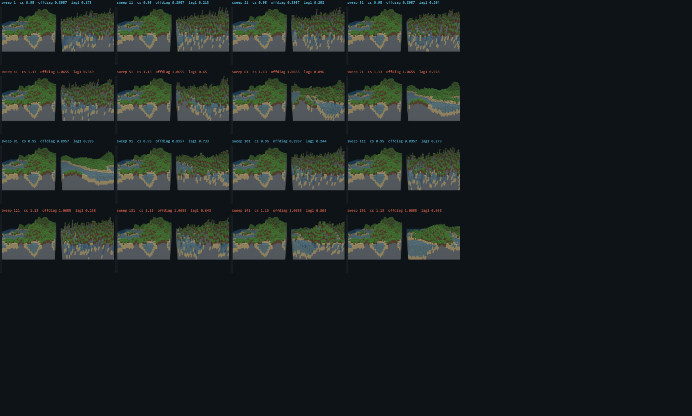
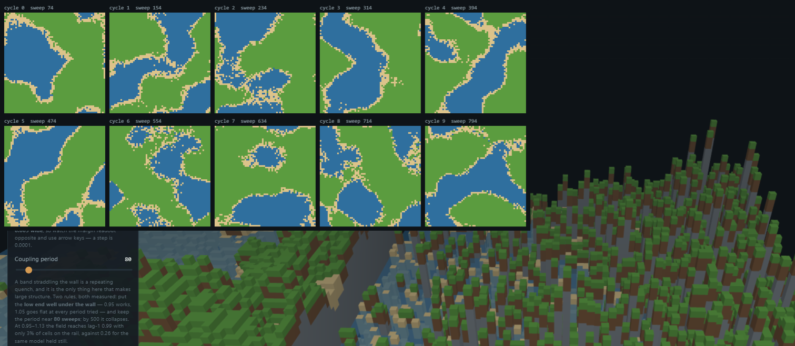
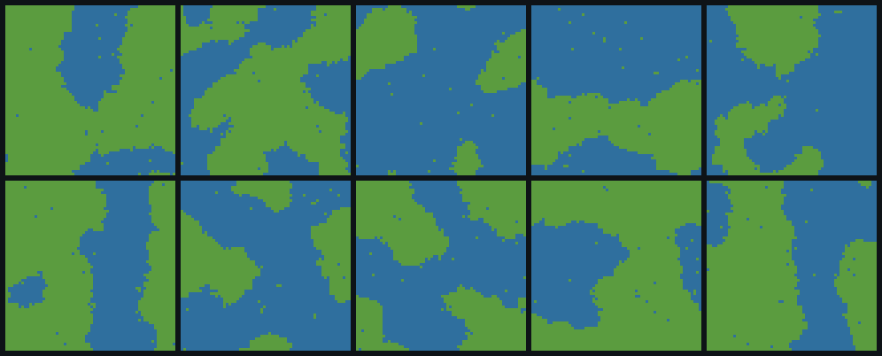
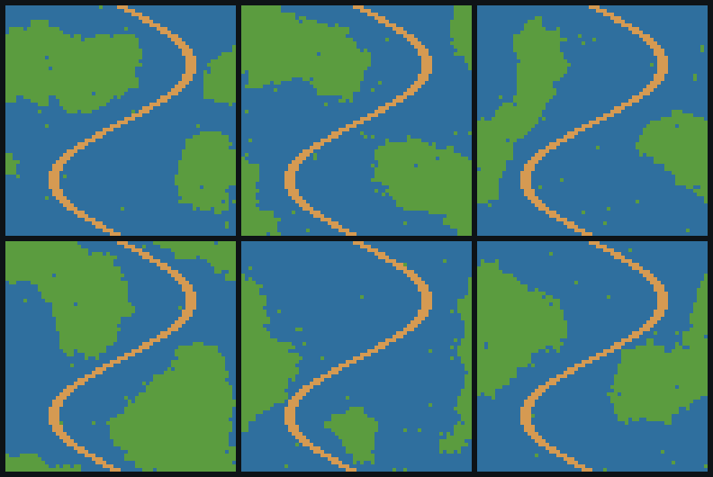

Abstract
Minecraft-style terrain is generated today by evaluating a noise function at every point — a pure feed-forward computation with no notion of constraint. This paper asks whether the same landscape can instead be sampled from an energy, which is the operation a thermodynamic sampling unit (TSU) performs natively, and reports what that buys and what it costs. The vehicle is a live side-by-side demo: Perlin fBM on the left, a Gaussian Markov random field relaxing under red-black block Gibbs on the right, both rendered as voxel terrain.
The headline result is negative and specific. A sparse GMRF whose precision is the
SPDE operator (κ² − Δ) has spectral density
S(k) ∼ k⁻², which in two dimensions is the marginal,
log-correlated case (α = 1, ν = α − d/2 = 0).
It has no correlation length to tune. Measured: the 1/e correlation length is 1.5 cells at
κ = 0.06 and 0.8 cells at κ = 0.80 — a knob nominally
spanning 13× in feature size moves the actual field by under 2×. The reason is mode
counting, not implementation: at κ = 0.06 the longest-wavelength mode carries
364× the power of the shortest, but there are 49 long modes
against 2,791 short ones, so 33.5% of the variance sits below three cells.
The positive result is that the structure the model cannot produce at equilibrium, it produces readily out of equilibrium. Driving the coupling on a periodic schedule that crosses the positive-definiteness boundary turns the sampler into a repeating quench, and the spatial autocorrelation at lag 1 rises from 0.27 held static to 1.00 at the top of each cycle, with coherent coastlines and only 3% of cells at the saturation rail. Over 21 consecutive cycles the landscapes are individually coherent (lag-1 0.970–0.991) yet mutually uncorrelated (mean pairwise correlation −0.022 across 210 pairs) — so the schedule is a generator of independent worlds, not an oscillation between attractors. That regime is not sampling, and the paper is explicit about what it therefore forfeits.
Because all of that was measured on a continuous field, which is not the object THRML or the hardware targets, the whole experiment was then re-run on binary spins in THRML (§7). It reproduces: mean pairwise correlation between successive worlds −0.004, coherence NN 0.87–0.93. Two corrections follow from that port. The periodic schedule is not a programming model — it is statistically identical to restarting from random and costs twice as much. And the one capability the Gaussian model lost past its stability boundary — conditioning on painted constraints — turns out to have failed for a purely Gaussian reason and works on spins, in 6 of 6 runs, where the Gaussian failed in 10 of 10.
No thermodynamic hardware was used or measured. Everything here runs in NumPy, in JAX via THRML, or in JavaScript in your browser. Claims about what a TSU would do are conditionals with a stated precondition, marked as such, and are not results.
THRML ships SpinNode and CategoricalNode. The continuous height field used
through §6 is a custom subclass of AbstractNode written for this work,
with a hand-written Gaussian conditional sampler — it is not a stock THRML model, and §7
exists because of that.
The demo is a 64×64 single-chunk instrument, not a world generator. It has no biomes, no caves, no vegetation, and no vertical structure beyond a height field. It exists to make one question answerable by turning a knob.
1The question this is pointed at
When a hardware vendor says it needs algorithms, the useful reading is not “find more places to call a sampler.” It is: find problems where sampling is the whole computation, not a step inside a larger one. A sampler that supplies 1% of an algorithm’s operations cannot repay the cost of moving data to it, however efficient it is per sample.
Procedural terrain is an unusually clean test of that criterion. Classical world generation is feed-forward by construction: evaluate noise at a coordinate, get a height. It is embarrassingly parallel and already cheap, which makes it a hostile target — there is no sampling cost to displace. But it is also structurally incapable of one thing: you cannot tell Perlin noise where to put a river. Constraint satisfaction is exactly what a feed-forward generator cannot do and exactly what conditional sampling does for free.
If terrain generation is re-posed as drawing from an energy, then constraints become free — clamp the cells you care about, and the sampler resolves everything else consistently around them. The question is what that costs in the quality of the terrain you get back.
2The model, and what every part of it represents
The right-hand world is a Gaussian Markov random field on a 64×64 periodic
lattice. Each cell holds a continuous height. The field is defined by a precision matrix
Q, and — this is the whole point — Q is sparse:
a zero at Qᵢ₃ means cells i and j are conditionally
independent given everything else. Sparse precision is what makes the model local, and locality is
what makes it executable on hardware where each cell talks only to its neighbours.
We take Q to be the discretised SPDE operator of Lindgren, Rue and Lindström,
(κ² − Δ), extended with the eight knight-move offsets so the
stencil reaches degree 12 while remaining two-colourable:
Qᵢᵢ = κ² + 4a + 8b Q(nearest) = −a (4 of them) Q(knight) = −b (8 of them)Every neighbour offset has dx + dy odd, so the interaction graph is bipartite and a
two-colouring is exact. That matters directly: block Gibbs updates every cell of one
colour simultaneously, so a full sweep is two parallel steps regardless of lattice size. This is the
operation an Extropic TSU executes in silicon, and it is why the stencil was constrained to stay
two-colourable rather than simply made wider.
| What you turn | What it is in the energy | What it does to the picture |
|---|---|---|
| Correlation length κ | the mass term in (κ²−Δ) |
Nominally feature size. Measured effect is weak — see §5. Its real influence is that it moves the stability boundary. |
| Coupling scale | multiplies every off-diagonal, diagonal held fixed | How strongly neighbours agree. The dominant knob. Crossing 1.000 in off-diagonal mass changes the physics entirely. |
| Anisotropy x : z | unequal a per axis |
Directional elongation. Correct in direction, modest in size: ratio reaches only ~1.5 at either extreme. |
| Relief / sea level | neither — pure rendering | Height gain and the water threshold. Applied identically to both worlds so the comparison stays fair. |
| Clamped cells | clamped_blocks — cells held fixed during the sweep |
Constraints. The sampler resolves the free cells conditioned on them. |
| Sampling speed | nothing physical | Sweeps per rendered frame, down to one per 32 frames, so transients can be watched. |
Off-diagonal mass = (sum of off-diagonal magnitudes) / Qᵢᵢ.
Below 1.000 the matrix is diagonally dominant, hence positive definite, hence a probability
distribution exists and the chain samples it. At and above 1.000 there is no distribution to sample.
Every regime boundary in this paper is that one ratio crossing that one value.
3Verification before use
THRML is JAX and Python and cannot run in a browser, and the page must run its own sweep in
JavaScript. That is only honest if the JavaScript draws from the same distribution, so the port was
validated against ground truth before any interface was built on it. The sampled radial
spectrum was compared to the analytic 1/q̂(k):
| Check | Result | Verdict |
|---|---|---|
| Mean relative error across the radial band | 0.0350 | pass |
| Sampled spectral slope vs analytic | −1.30 vs −1.30 | pass |
Control: positive definiteness (min q̂) | > 0 everywhere | pass |
Control: a=b=0 must give white noise of variance 1 | 0.9292 | pass |
| Off-nominal (coupling 0.70–1.00, anisotropy 0.35–3.0), 5 configurations | band error 3.3–4.8% | 5/5 pass |
The last row exists because the first validation was run at a single setting. A sampler verified at one point in its parameter space has been verified at one point; the page ships settings across a wide range, so the range was tested.
4Three regimes, read off the field
The demo reports which of three regimes it is in, and it determines this by measuring the field rather than predicting from a formula — because the boundaries move with sweeps-per-frame and are a stochastic race. The same coupling has come back “domains” on one run and “collapsed” on the next.
| Regime | Condition | Measured signature | What it is |
|---|---|---|---|
| sampling | off-diag < 1.000 | — | A genuine draw from the GMRF. The only regime where the model means what it claims. |
| quench — forming | past the wall, few cells railed | lag-1 climbing 0.35 → 0.98 over ~40 sweeps | Domains growing out of noise. Visually the most interesting state. |
| quench — domains | past the wall, both rails populated | 77.5% railed, NN correlation +0.969, features 16–29 cells | A saturated two-phase field. Frozen: unchanged from sweep 200 to 12,800. |
| collapsed — flat | past the wall, one rail only | std 0.0000, one unique value | Every cell the same sign. The world is perfectly flat. |
The quench regime deserves a note, because the linear analysis gets it wrong. Past the boundary the iteration is linearly unstable, and the fastest-growing modes are the uniform mode and the Nyquist checkerboard, which are exactly degenerate on a bipartite stencil. Simulated without saturation, the field converges to 100% checkerboard. But the implementation holds cells at a rail — the continuous stand-in for the ±1 bound a real Ising TSU has by construction — and that nonlinearity produces the opposite outcome: nearest-neighbour correlation +0.969, ferromagnetic domains, not checkerboard. The relevant physics is domain coarsening, which is also why the result looks like erosion: coarsening moves boundaries by curvature, and so does erosion.
5The central negative result: β=2 in 2D has no length scale
The κ knob is labelled “correlation length” and largely does not deliver one. This is not an implementation defect; it is what the operator is.
For the SPDE family (κ²−Δ)α in d
dimensions the Matérn smoothness is ν = α − d/2. Fitting the
small-k behaviour of our lattice operator gives a measured slope of 1.965, so
α = 0.983 ≈ 1 and therefore ν = −0.017 ≈ 0. Zero smoothness is
the marginal, log-correlated case — the two-dimensional Gaussian free field. The Matérn
range formula √(8ν)/κ evaluates to zero: the model has no
correlation length, at any κ.
| κ | 1/e length, exact spectral synthesis | 1/e length, Gibbs chain |
|---|---|---|
| 0.06 | 1.5 cells | 1.6 cells |
| 0.18 | 1.1 | 1.0 |
| 0.40 | 0.9 | 0.9 |
| 0.80 | 0.8 | 0.8 |
The two columns agree, which rules out the chain being unconverged: the exact samples are drawn by
spectral synthesis with no Markov chain involved. The cause is mode counting. At
κ = 0.06 the k=0 mode carries 364× the power of the Nyquist
mode individually, but the number of modes at radius k grows like k:
| Wavelength band | Share of variance | Number of modes |
|---|---|---|
| > 16 cells | 29.2% | 49 |
| 16 – 6 cells | 18.0% | 276 |
| 6 – 3 cells | 19.2% | 980 |
| < 3 cells | 33.5% | 2,791 |
Variance is spread almost evenly per octave — scale-free roughness. Turning κ down does add long-wavelength power, but the renderer z-scores the field against a standard deviation dominated by cell-scale roughness, so the continents are normalised straight back down.
Sparse precision is the property that makes a GMRF hardware-native, and in two dimensions the
cheapest sparse operator lands exactly on the roughest useful exponent. Real terrain is smoother than
this model can be at equilibrium. The identified fix is β=4, the biharmonic
(κ²−Δ)², which is still sparse at higher stencil degree and
by spectral synthesis gives a 1/e length of 14.2 cells at κ=0.06 with
94.8% of variance above 16 cells. That is untested in the live demo and is
stated here as the next experiment, not as a result. It is also, pleasingly, the thin-plate operator
— the literal Chladni plate.
6Schedules: the knob that actually makes landscape
Each of κ and coupling is a band, not a value. Collapse the two thumbs and the parameter is static; separate them and it walks between them on a period measured in sweeps, so a schedule reproduces identically regardless of framerate. This was added because driving the coupling across the stability boundary by hand produced structure that holding it still never did.

| Configuration | lag-1 autocorrelation | Cells at rail |
|---|---|---|
| Static, coupling 0.95 | 0.27 | — |
| Band 0.95 ↔ 1.13, snap, period 80 | peaks at 1.00, above 0.6 for 50–62% of the cycle | 3% |
| Same band, sweep (triangle) waveform | above 0.6 for 38% of the cycle | — |
Two operating rules, both measured and both counter to what was expected. Snap beats sweep — ramping smoothly spends most of the cycle at intermediate couplings that neither build structure nor hold it. And the band’s low end must sit well under the boundary: 0.95 works, while 1.05 ↔ 1.13 goes flat at every period tested, out to 11.9 τ. A first explanation for that (a large mean entering the quench) was refuted — every low end from 0.90 to 1.05 produced domains after a fresh settle. A second (the low phase needs several τ to re-mix) explains the 1.03 band but fails on 1.05. That corner remains unexplained, and the demo ships the empirical map rather than a mechanism.
Melting is worth stating precisely because it is two different things. Dropping below the boundary collapses the field’s amplitude in a single sweep. Washing out its shape takes about 20 sweeps — roughly 4τ at coupling 0.95. The second is what you watch, which is why the demo can run as slowly as one sweep per 32 frames.
Each quench is an independent draw
Watching the schedule at one sweep per sixteen frames makes a stronger claim available than “it morphs.” The cycle does not alternate between a small number of attractors: each quench cools into a landscape statistically unrelated to the one before it. Measured over 110 seconds and 21 consecutive cycles, snapshotting the z-scored field at the end of every high phase and correlating all 210 pairs:
| Quantity | Measured | Reading |
|---|---|---|
| Internal coherence of each landscape (lag-1) | 0.970 – 0.991 | every cycle is individually coherent |
| Mean correlation across all 210 pairs | −0.0223 | indistinguishable from zero |
| Spread of those correlations (sd) | 0.2887 | implies Neff ≈ 12 independent patches |
| Neff from the measured feature size (13.5 cells) | ≈12–23 | agrees, by an independent route |
| Largest single pairwise correlation | 0.652 | ~2.2 sd — no pair anomalously alike |
The two estimates of Neff are what make this more than a null result: one comes from the scatter of the correlations, the other from the size of the features, and they agree. The observed spread is what independent draws with about a dozen independent patches would produce. There is no residual preferred pattern for successive cycles to share.

A schedule crossing the boundary is not an animation and not an oscillator between two states. It is a generator: each cycle emits one coherent landscape drawn independently of the last, with feature size set by quench depth rather than by any coupling constant — and it is the regime spin hardware naturally sits in, because bounded spins cannot diverge.
Corrected in §7: the cycle is not doing the work. Measured against restarting from a random state each time, the periodic schedule is statistically indistinguishable and twice as expensive. The quench is the mechanism; the schedule around it is a convenience.
7The binary-spin port: does any of this survive on the native object?
Everything above was measured on a continuous Gaussian field. That is not the object
THRML targets. THRML ships SpinNode and CategoricalNode; the
ContinuousNode used here is our own subclass of AbstractNode
with a hand-written Gaussian conditional sampler. Binary spins are the native type, and the
hardware's native type. So the fair question is whether the preceding results are properties of the
physics or artifacts of a Gaussian stand-in.
The port keeps everything else fixed: same 64×64 periodic lattice, same degree-12 stencil
(4 nearest + 8 knight, every offset dx+dy odd, so the 2-colouring is exact —
verified at 0 same-colour pairs across 24,576 edges), same relative weights
1.0 : 0.18. What changes is the knob. On spins there is no precision matrix to lose
definiteness; there is only temperature, so the schedule drives β across the
ordering transition rather than driving a coupling across a positive-definiteness
boundary.
| Quantity, at quench peaks | Gaussian (v1) | THRML spins | |
|---|---|---|---|
| Internal coherence of each world | lag-1 0.970–0.991 | NN 0.87–0.93 | reproduces |
| Feature size | 13.5 cells | 8.3–9.9 cells | same order |
| Mean pairwise correlation between worlds | −0.022 (210 pairs) | −0.004 (190 pairs) | reproduces |

IsingEBM in THRML — binary spins, β
driven across the ordering transition. Each is a coherent land/sea configuration with organic
coastlines; no two alike. The Gaussian result is not an artifact of the Gaussian.v1 framed the periodic schedule as a programming model. That framing is not supported. Measured against simply restarting from a random state each time:
| Method | NN corr | Feature size | Mean pairwise r | Sweeps / world |
|---|---|---|---|---|
| Cyclic schedule | 0.902 | 9.3 | −0.007 | 80 |
| Independent restarts | 0.902 | 8.7 | −0.004 | 40 |
Statistically indistinguishable, and restarting is half the cost. The quench is the mechanism; the cycle around it is a convenience. The defensible claim is that a quench from disorder yields a coherent world and repeated quenches yield independent ones — which holds however you re-disorder in between.
What a continuous field costs on binary hardware
If the native object is a spin, a continuous height must be embedded — as bit-planes, where a k-bit fixed-point value expands into pairwise couplings scaling as 2(i+j). We predicted that would drive the model straight into the mixing wall. That prediction was wrong. Exact relaxation times for a k-bit fixed-point GMRF:
| bits | dynamic range | τ (exact) | vs 1-bit |
|---|---|---|---|
| 1 | 1 | 2.381 | 1.0× |
| 3 | 16 | 3.811 | 1.6× |
| 4 | 64 | 3.961 | 1.7× |
| 6 | 1024 | 4.010 | 1.7× — saturated |
The cost saturates at 1.7× by four bits, so the Gaussian→binary contract is cheap. The constraint that actually binds is not cell count but degree and fanout against a device's interaction graph — 12 here, and more for any smoother operator.
8Constraints, and exactly where they stop meaning anything
This is the capability that motivated the whole exercise. Paint cells on the minimap and they become
clamped_blocks: held fixed while the sampler resolves everything else around them. A
painted sine river of 192 cells holds 192/192, and reads as a genuine channel — the
unclamped terrain sits +2.84σ above it. Re-roll and you get a different world with the
same river, which is the thing Perlin structurally cannot do.
Past the stability boundary this silently inverts. Across 10 seeds at coupling 1.13, a painted river
read as a ridge 10 times out of 10. The cells are still held; what is gone is the
conditional distribution. With Q not positive definite there is no stationary
distribution, so there is nothing to condition on, and the ferromagnetic quench simply drags the
landscape to the river’s own sign.
The obvious fix — clamp the river to the rail so it stays low — was tested and made it worse: the bulk follows to the same rail and the world goes uniform, contrast 0.00. There is no clamp value that works there. The demo therefore warns instead of pretending, and the warning is keyed to the whole band rather than the instant so it does not strobe under a schedule.
On spins the failure disappears entirely
That limitation turns out to be a Gaussian pathology, not a physical one. The reason
conditioning breaks past the wall is that Q stops being positive definite, so there is no
distribution left to condition on. A spin system has a perfectly good Gibbs distribution at
every β, ordered phase included — so the failure has no analogue there.
Running the identical experiment on the THRML IsingEBM — the same 192-cell sine
river, held through clamped_blocks, quenched across the ordering transition:
| Model | Runs where the river reads as a channel | Mean spin adjacent to the river |
|---|---|---|
| Gaussian, past the wall (v1) | 0 of 10 — read as a ridge | — |
| THRML spins, ordered phase | 6 of 6 | −0.99 to −1.00, against a far field of −0.03 to −0.61 |

This answers the obvious objection — you are just drawing i.i.d. samples. The independence is between worlds, which is what a generator should give. The value is that each world is a draw from a conditional distribution given whatever you clamp, and no feed-forward noise function can do that at any price. Perlin cannot be told where to put a river.
Honest caveat: a 192-cell clamp also tilts the global phase — the far field ran as low as −0.61, so painting a river makes the whole world wetter. That is the correct ferromagnetic response to a boundary rather than a bug, but it means a large constraint is not a local edit.
9Instrumentation, and why the obvious formula lies
The panel reports τ, the relaxation time of the slowest mode — the quantity that
makes the mixing–expressivity tradeoff visible. The first implementation computed
Qᵢᵢ/κ², which contains no coupling term at all. It printed
18 at couplings 0.90, 1.00, 1.13 and 1.45 alike, in green, while the row directly
beneath it reported the chain as diverging.
The correct derivation: red-black Gibbs re-noises one sublattice every half sweep, so the chain’s
memory lives on the other, which propagates as C·C. The eigenvalues are therefore
the squares of the Jacobi eigenvalues, extremal at k=0 and
k=(π,π), both of magnitude equal to the off-diagonal mass. Hence:
τ = 1 / (1 − offdiag²)Validated against the measured slow tail across the slider range: predicted/measured ratio 0.89–0.96. It now spans 1.5 to 122 and responds to the coupling, and past the boundary it reports nothing at all, because a relaxation time toward a non-existent equilibrium is not a meaningful quantity to print.
A second instrumentation lesson concerns resolution. The interesting states occupy a coupling window about 0.005 wide, and the slider originally stepped 0.01 — it straddled the window and could never land inside it:
| Coupling | Off-diagonal mass | lag-1 | Reachable at 2 decimals |
|---|---|---|---|
| 1.0600 | 0.9995 | 0.47 | yes |
| 1.0625 | 1.0018 | 0.53 — peak | no |
| 1.0650 | 1.0042 | 0.15 | no |
| 1.0700 | 1.0089 | 0.06 | yes |
Both knobs now carry 10⁻⁴ resolution with arrow-key stepping, and the panel shows the signed
margin to the boundary directly. This also resolves a knob that had seemed merely subtle: because the
boundary itself sits at (κ²+X)/X, a κ band is a margin band.
At coupling 1.00 a full κ swing never crosses and barely registers; at coupling 1.02–1.10 the
same swing crosses it and lag-1 goes from 0.34 to 0.99. The knob is not weak, it is conditional.
10How this tooling, and a TSU, would be used
The demo is an instrument for a design question, and the transferable part is the question, not the terrain. Three things generalise.
Sparse precision is the hardware contract. A zero in Q is a wire that
does not need to exist. Anything expressible as a local energy on a two-colourable graph runs as two
parallel steps per sweep, at any lattice size. Designing for that constraint — here,
accepting degree 12 to keep the graph bipartite rather than taking a wider isotropic stencil — is
the actual engineering.
Constraints are the product, not the terrain. The measured capability that classical generation lacks is conditional resolution: hold 192 cells, get a consistent world around them, re-roll for another. Any problem shaped like “I know some of the answer, give me the rest consistently” maps onto this directly — and, critically, that is a problem where sampling is the whole computation rather than a subroutine inside one.
There are two programming models, not one. Below the boundary you program by shaping a spectrum: choose an energy, get a distribution. Above it you program by quenching: drive the system through its ordering transition and feature size is set by how deep you go, not by any coupling constant. On this model the second is the one that produced usable landscape, and §7 confirms it on binary spins. Note the correction there, though — it is the quench that is the primitive, not any particular schedule wrapped around it.
And the two compose. The result in §8 is that a quench can be run conditionally — clamp what you know, quench the rest, get a coherent world that honours the constraint, and repeat for a different one. That combination is the thing no feed-forward generator offers, and on spins it is available at every temperature rather than only below a stability boundary.
Whether any of this is efficient depends on hardware that was not used here. On a GPU this is strictly worse than calling a noise function. The precondition is that sampling is the dominant cost of the target problem and that a TSU performs it far more cheaply than a GPU; terrain generation as posed here does not obviously satisfy the first half of that, since Perlin noise is already nearly free. What terrain does establish is the capability difference, on a problem simple enough to verify completely.
A real Ising TSU also differs from this simulation in a specific way worth recording: its spins are bounded at ±1 by construction, so it lives permanently in the saturated regime and cannot diverge. Past its critical coupling it does what the rail-clamped field here does — forms domains. The quench programming model is therefore closer to the hardware’s natural behaviour than the sampling model is.
11Errors found and corrected
Reported because the pattern is the same every time and is the main methodological lesson: a measure was validated in the regime where it works and shipped without testing the regime it exists to catch.
| Defect | How it presented | How it was caught |
|---|---|---|
| τ readout ignored the coupling | printed 18 in green at every coupling, next to a divergence warning | reading the formula against the slider it claimed to describe |
| Two panel rows in different units | a ratio stacked next to a coupling value, reading as “0.5% over” when the margin was 6.6% | recomputing the comparison by hand |
| Whole world rendered mirrored | at yaw = π the right vector is (−1,0,0), silently swapping the two labelled halves | forcing one side to diverge and noticing the wrong half shattered |
| Regime indicator too permissive | a field at 99.6% railed with std 0.015 labelled “domains”; z-scoring amplified the residue into a field of spikes | screenshotting the state instead of trusting the number |
| Linear analysis of the quench | predicted the Nyquist checkerboard; the saturated system does the opposite | reading the rail clamp that had been in the grepped output all along |
| Correlation-length metric | power-weighted mean returned ~0.6 cells for every κ | noticing it could not distinguish the cases it existed to distinguish |
| κ declared “weak” | measured at coupling 1.00 — the one value where κ cannot cross the boundary | testing a second coupling |
| THRML sampler appeared to run but did not | SamplingSchedule(n_warmup=0, n_samples=1) returns the initial state verbatim; a
β=0 randomness check "passed" while measuring its own bernoulli initialiser |
a second control from an all-+1 start, where zero spins flipped and every one should have been a coin toss |
| Quench-depth prediction | predicted shallower quenches would grow features toward the Gaussian's; the dependence runs the other way, monotonically | measuring six depths instead of arguing |
| Matérn range mis-applied | compared measurements against the formula at ν=1 when the model sits at ν=0 | a reviewer’s objection prompting a re-derivation |
12What is not established
- No energy measurement, no hardware. Every efficiency claim about a TSU is a conditional and is marked as one.
- β=4 is untested in the demo. Spectral synthesis says it fixes the length-scale problem; the live sampler still runs β=2.
- The 1.05 band collapse is unexplained. Two candidate mechanisms were tested and both failed. The empirical map is reported instead.
- This is one 64×64 chunk. No biomes, caves, vegetation, or 3D density field. A categorical biome layer inside the same superblock is the next structural step.
- The quench regime is not equilibrium sampling. Worlds produced past the boundary are not draws from the GMRF and carry none of the guarantees the sampling regime does — though §8 shows they are draws from a well-defined conditional distribution once the model is spins rather than a Gaussian.
- The feature-size gap between Gaussian and spins is unexplained. 13.5 cells against 8.3–9.9. Quench depth was the obvious candidate and was ruled out by measurement.
- βc is not pinned down. Ordering sets in somewhere near 0.26–0.30 on this stencil, but the equilibrium scan is unreliable near the transition — critical slowing down makes |m| read 0.85 at β=0.30 and 0.20 at β=0.34. A finite-size study would be needed to quote it properly.
Sources: validate_js_sampler.mjs, terrain_gmrf.py,
terrain_thrml.py, audit_page.py, validate_fixes.py,
diagnose_chladni*.py, osc_*.py, probe_knobs.py.